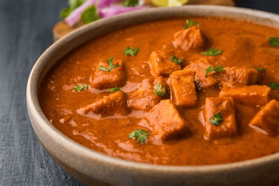

Tikka Masala

Ingredients
4 tbsp vegetable oil
- 25g butter
- 4 onions, roughly chopped
6 tbsp chicken tikka masala paste (use shop-bought or make your own – see recipe, below)
2 red peppers, deseeded and cut into chunks
8 boneless, skinless chicken breasts, cut into 2.5cm cubes
2 x 400g cans chopped tomatoes
4 tbsp tomato purée
2-3 tbsp mango chutney
150ml double cream
150ml natural yogurt
chopped coriander leaves, to serve
How to create
STEP 1 Heat the vegetable oil and butter in a large, lidded casserole on the hob, then add the onions and a pinch of salt. Cook for 15-20 mins until soft and golden. STEP 2 Add the tikka masala paste and peppers, then cook for 5 mins more to cook out the rawness of the spices. STEP 3 Add the chicken breasts and stir well to coat in the paste. Cook for 2 mins, then tip in the chopped tomatoes, tomato purée and 200ml water. Cover with a lid and gently simmer for 15 mins, stirring occasionally, until the chicken is cooked through. STEP 4 Remove the lid, stir through the mango chutney, double cream and natural yogurt, then gently warm through. Season, then set aside whatever you want to freeze. Will keep, in an airtight container, in the freezer for up to three months. Scatter the rest with coriander leaves and serve with basmati rice and naan bread.